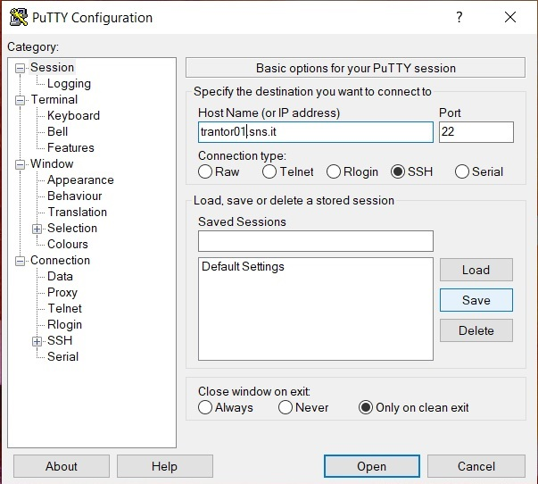
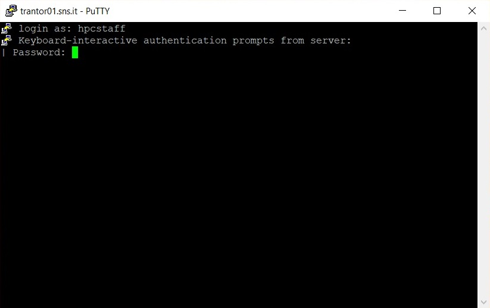
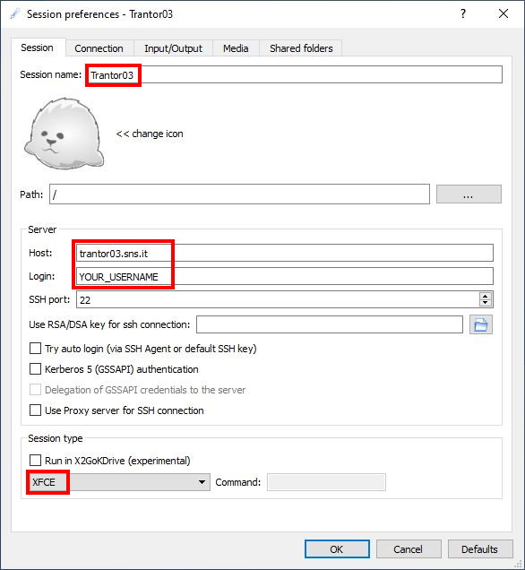
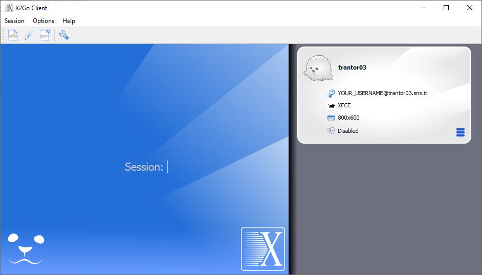
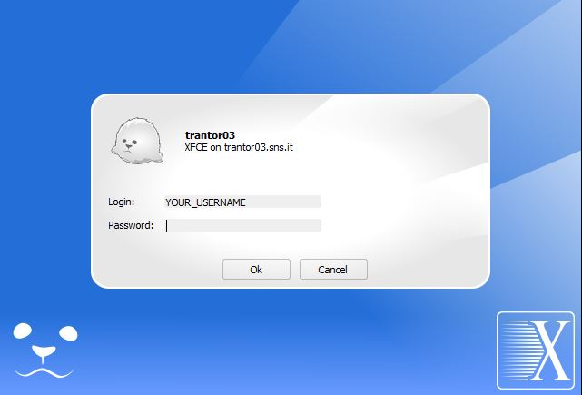
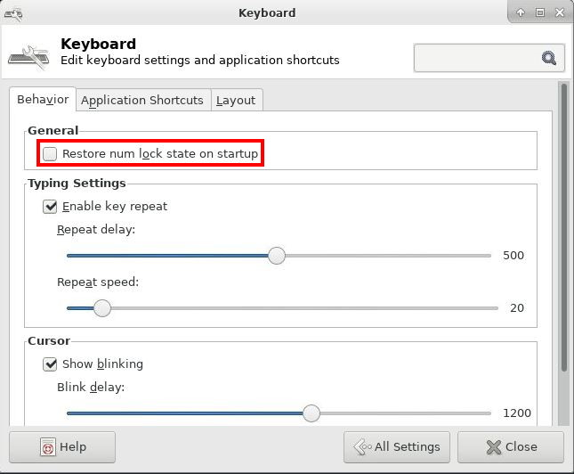

Connecting to the head-nodes
To get access to (most) of the cluster resources, you must first login into one of the available "head nodes":
- trantor01.sns.it
-
- Open access
- trantor02.sns.it
-
- Open access
- trantor03.sns.it
-
- Open access
- Equipped with a desktop environment
- hypnos.sns.it
-
- Access restricted to the 'interstellar' group
- Equipped with a desktop environment
- cinna.sns.it
-
- Access restricted to the 'compnanobio' group
- Equipped with a desktop environment
- gaia01.sns.it
-
- Access restricted to the 'bioinfo' group
- Acts both as head-node and compute node
Login and commands execution on the head-nodes are usually managed by the SSH protocol. However, some of the head-nodes (such as trantor03.sns.it) are also equipped with a desktop environment (Xfce) and the X2Go remote desktop solution.
Instructions on how to access the cluster using SSH and X2Go are discussed in the following.
First login to the cluster
At your first login, you will be prompted to change the password:
ssh username@trantor01.sns.itPassword:# Enter the one-time passwordPassword expired. Change your password now.Current Password:# Enter the one-time password once againNew password:# Enter a new passwordRetype new password:# Confirm the new password
The password must be at least 12 characters long and must contain an uppercase letter, a lowercase letter, a digit and a special character. Furthermore, it is not allowed to use the same character three or more times in a row. Finally, when the password expires, old passwords can not be reused.
Getting started with SSH
Secure Shell, or SSH,
is a cryptographic (encrypted) network protocol to allow remote login
and other network services to operate securely over an unsecured
network.
The most visible application of the protocol is for access to shell
accounts on Unix-like operating systems.
SSH can be used for both command line and GUI applications.
Instructions on how to access the cluster using ssh on the most popular operating systems are described in the following:
Using Windows
Windows 10 has an official SSH client now. It can be enabled in the Settings panel clicking on Settings -> Optional features ->
Add a feature -> OpenSSH Client (if already enabled it will appear in the "Optional features" list).
It can be used on any terminal application like the standard cmd console prompt or Windows PowerShell. You can also try Windows Terminal
from Microsoft App store.
On older versions of Windows, things are a little more involved. Older Windows does not come with a built-in SSH client, so you have to install
one first. We recommend the popular software Putty, which is free and well made.
- Download putty here;
- Run
putty.exe; - Login to server trantor01.sns.it as shown below:

Type in user-name and password:
{kind=link}

You now have your Unix/Linux prompt. On our cluster, the command qstat -Q will show you a quick summary of the queues status, as you can
see below.
{kind=link}
{kind=link}
- Download WinSCP here;
- Execute
WinSCP.exe; - Login to trantor01.sns.it with username and password:
{kind=link}
{kind=link}
Using Linux
To access the cluster from Linux:
- Open Gnome Terminal or any other terminal emulator;
- Install SSH if you don't have it already; refer to the documentation of you Linux distro to know how to do it;
- Type ssh yourusername@trantor01.sns.it;
- Type your password;
- Do your stuff.
To close the session, type exit or press CTRL + D. For secure file transfer, you can use the command line utilities scp or sftp,
for example:
$ scp -r yourusername@trantor01.sns.it:mydata/myresults ./localdir/
scp starts the relative path from the user home directory; the -r switch is used to recursively copy the directory and its content.
As an alternative, you can also use built in remote capabilities in a file-browser such as Nautilus in Gnome:
- Open file browser (Nautilus);
- Switch to “Go To” view: use key combination CTRL + L;
- In “Go-to” input box type sftp://trantor01.sns.it;
- Type your username and password, then select “connect”.
Using MacOS X
This is how to login the cluster from a Mac, it works more or less like in Linux (see above):
- Open Terminal;
- Type ssh yourusername@trantor01.sns.it;
- Type your password;
- Do your stuff.
To close the session, type exit or press CTRL + D. Refer to the Linux paragraph for instructions on how to use SCP.
Getting started with X2Go
In addition to ssh access, some of the head-nodes (such as trantor03.sns.it) also provides a remote desktop environment. In particular, they are equipped with the Xfce desktop environment and a X2Go server.
To use remote desktop, you first need to install the X2Go client. You can refer to the official documentation for instructions on how to install the client on various platforms.
Once the client is up and running, create a new session by selecting the menu item "Session --> New session...". A new dialog will appear, asking for connection details. Fill the form as follows:
- Session name: whatever you like (eg. 'Trantor03')
- Host: the fully-qualified domain name of the head-node (eg. trantor03.sns.it)
- Login: your username
- Session type: XFCE

Then press "OK" to save the session preferences. A small gray box representing the session will appear at the right side of the window:

Click on it. A login dialog will appear. Inserts your credentials and press "Ok":

The remote desktop window should start in a few seconds.
Hint
Test if the keyboard numpad is working correctly
within the remote desktop. If not, open the Xfce's
keyboard settings and disable the
"Restore num lock state on startup" checkbox.
Finally, close and re-open the X2Go session.
